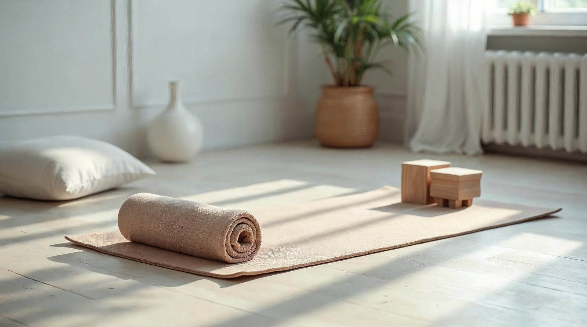
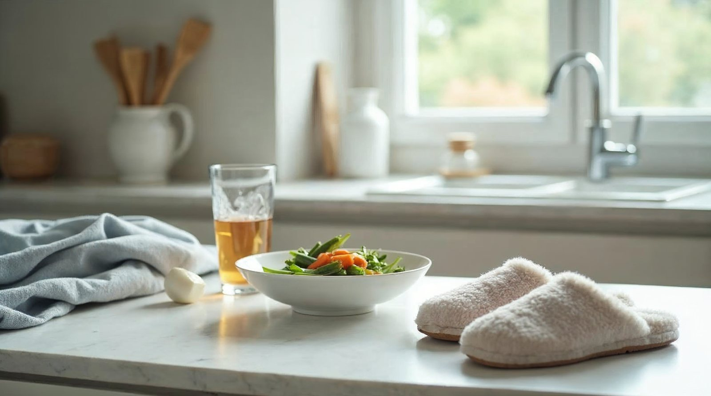
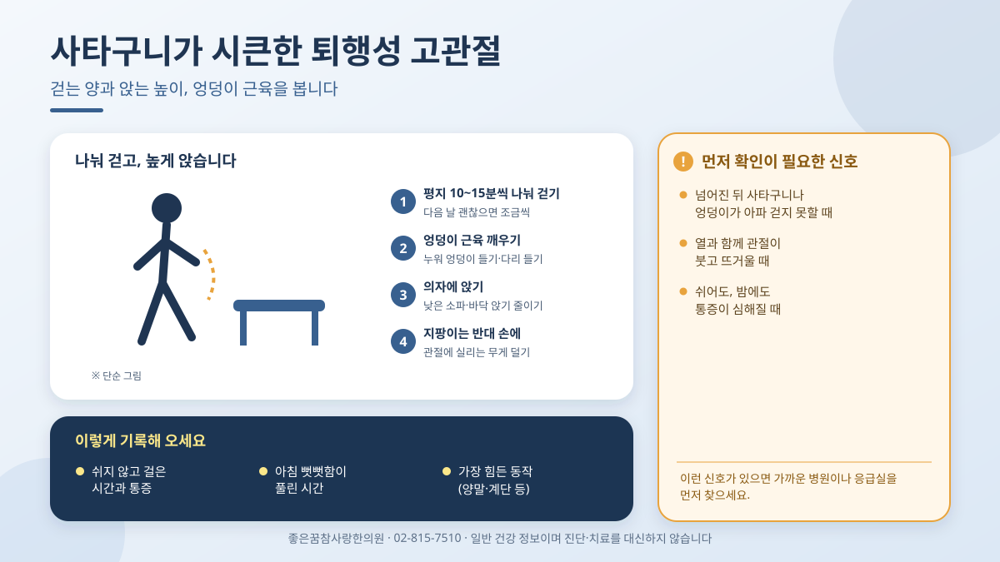

이종호 한의사 감수좋은꿈참사랑한의원 대표원장 (한의사 면허번호 19769)발행 2026-11-26 · 수정 2026-11-26
이 글의 차례
아침에 양말을 신으려고 한쪽 다리를 끌어당기는데 사타구니 깊은 곳이 뻐근하게 막힙니다. 예전엔 아무렇지 않게 하던 동작인데 이제는 의자에 앉아 발을 반대쪽 무릎에 올려야 겨우 신을 수 있습니다. 차에서 내릴 때도 다리를 한 번에 빼기가 어렵습니다.
진료실에서 이런 말씀을 자주 듣습니다. "허리가 안 좋아서 그런 줄 알았어요." "엉덩이 안쪽이 아픈데 어디라고 말해야 할지 모르겠어요." 고관절은 몸 깊숙이 있어 아픈 자리를 손가락으로 짚기 어렵고, 그래서 오래 이름 없이 지내는 경우가 많습니다.
고관절은 골반과 넓적다리뼈가 만나는 관절입니다. 이 관절의 연골이 오랜 세월 닳고 주변이 굳어 가는 것을 퇴행성 고관절염이라고 부릅니다. 사타구니나 엉덩이 앞쪽이 시큰하고, 다리를 안쪽으로 돌리거나 굽히는 동작이 점점 불편해지는 것이 흔한 모습입니다.
걷는 것이 두려워지면 하루가 좁아집니다. 시장도, 공원도, 손주 손을 잡고 나서는 길도 멀어집니다. 그런 시간을 보내셨다면 얼마나 답답하셨을까 싶습니다. 이 글에서는 고관절 통증을 어떻게 알아보고 무엇을 함께 살필 수 있는지 차근차근 적어 보겠습니다.
왜 고관절이 아플까요
고관절은 공 모양의 넓적다리뼈 머리가 골반의 오목한 자리에 들어앉은 구조입니다. 걷고, 계단을 오르고, 앉았다 일어설 때마다 몸무게의 몇 배에 이르는 힘을 받아냅니다. 이 표면을 매끄러운 연골이 덮고 있어 부드럽게 돌아갑니다.
세월이 흐르며 연골이 조금씩 얇아지고 거칠어지면 관절이 덜 매끄럽게 움직입니다. 관절 가장자리에 뼈가 덧자라고, 관절을 감싼 막과 주변 근육이 굳어 움직이는 범위가 좁아집니다. 그래서 통증과 함께 '안 굽혀지는' 느낌이 옵니다.
나이 말고도 영향을 주는 것이 있습니다. 어릴 때부터 고관절 모양이 얕았던 경우, 예전에 다친 적이 있는 경우, 체중이 많이 늘어난 경우, 쪼그려 앉아 일하는 생활이 길었던 경우에 더 일찍 찾아오기도 합니다.
엉덩이 근육이 약해지는 것도 중요합니다. 엉덩이 옆 근육은 걸을 때 골반이 한쪽으로 처지지 않게 붙잡아 줍니다. 이 근육이 약해지면 관절에 실리는 힘이 고르지 않게 되고, 통증 때문에 덜 움직이면 근육은 더 약해지는 고리가 생깁니다.
추운 날 더 뻣뻣하다는 말씀도 자주 듣습니다. 기온이 내려가면 근육과 관절 주변 조직이 굳기 쉽고, 움츠린 채 걷다 보니 보폭도 짧아집니다. 겨울에는 외출 전 집 안에서 다리를 몇 번 굽혔다 펴며 몸을 먼저 데우고 나가시길 권합니다.
통증이 있다고 마음까지 위축되면 바깥 활동이 줄고, 활동이 줄면 근육이 약해져 다시 아픕니다. 그래서 저는 통증의 크기만큼 '요즘 어디까지 다녀오시는지'를 꼭 여쭙습니다. 다니시는 거리가 하루의 크기이기도 하니까요.
허리, 대퇴골두 괴사, 엉덩이 옆 통증과는 어떻게 다를까요
엉덩이가 아프다고 다 고관절은 아닙니다. 아픈 자리와 동작을 나눠 보면 방향이 잡힙니다.
고관절 통증은 사타구니, 엉덩이 앞쪽, 허벅지 앞쪽으로 오는 경우가 많고, 때로 무릎까지 뻗치기도 합니다. 양말 신기, 다리 꼬기, 차에서 내리기처럼 다리를 굽히고 안쪽으로 돌리는 동작에서 막히는 느낌이 특징입니다.
허리에서 오는 통증은 엉덩이 뒤쪽, 허벅지 뒤쪽, 종아리까지 저리며 내려가는 모습이 흔합니다. 허리를 숙이거나 오래 서 있을 때 심해지고, 앉아 쉬면 덜해지기도 합니다. 두 가지가 함께 있는 분도 많아 진료실에서는 둘을 같이 살핍니다.
엉덩이 옆 튀어나온 뼈 주변이 아프고, 그쪽으로 누우면 아파 잠을 깬다면 엉덩이 옆 점액낭이나 힘줄 쪽 통증일 수 있습니다. 고관절 안쪽보다 바깥쪽 문제라 살피는 방법이 조금 다릅니다.
비교적 젊은 나이에 사타구니 통증이 갑자기 심해졌다면 대퇴골두 괴사처럼 뼈로 가는 피가 줄어드는 질환도 확인해야 합니다. 스테로이드 약을 오래 드셨거나 술을 많이 드신 분이라면 더 그렇습니다. 이럴 때는 정형외과 영상 검사가 먼저입니다.
예를 들면 이런 모습입니다
실제 어느 분의 사연이 아니라, 진료실에서 자주 보는 모습을 바탕으로 그려 본 장면입니다.
예를 들어 오래 바닥에 앉아 일하는 생활을 해 오신 어르신이라면, 바닥에서 일어날 때마다 한쪽 사타구니가 뻐근하다고 하십니다. 이럴 때는 바닥 생활을 의자와 침대 생활로 조금씩 바꾸는 것부터 함께 정합니다.
체중이 늘면서 걷기 운동을 시작했는데 엉덩이 앞쪽이 아파 그만두셨다는 분도 계십니다. 걷기를 멈추기보다 평지 위주로 바꾸고, 시간을 나눠 걷는 방법을 먼저 찾아봅니다.
상도동처럼 언덕과 계단이 많은 동네에 사시는 분이라면 내리막과 계단에서 통증이 더 커지기 쉽습니다. 내려올 때는 난간을 잡고 한 칸씩, 아픈 다리를 나중에 내리는 순서를 함께 연습해 봅니다.
스스로 살펴보는 질문
아래는 진단표가 아니라 내 엉덩이 통증을 설명하기 위한 질문입니다.
- 사타구니나 엉덩이 앞쪽이 깊숙이 시큰하다
- 양말 신기, 발톱 깎기, 다리 꼬기가 예전보다 어렵다
- 차에서 내리거나 낮은 의자에서 일어날 때 첫걸음이 아프다
- 아침이나 오래 앉아 있다 일어설 때 뻣뻣하다가 조금 걸으면 풀린다
- 걸을 때 한쪽으로 기우뚱하거나 절뚝인다는 말을 들었다
- 통증이 무릎 쪽으로 뻗치기도 한다
다리가 저리고 감각이 둔하거나, 힘이 빠지는 느낌이 함께 있다면 허리 쪽 원인도 함께 확인해야 합니다. 그 느낌이 있는지도 함께 적어 두세요.

엉덩이 근육을 깨우는 쉬운 동작
고관절을 붙잡아 주는 엉덩이 근육은 앉아 지내는 시간이 길수록 잠들어 버립니다. 그래서 진료실에서는 집에서 할 수 있는 동작 몇 가지를 함께 연습해 봅니다. 아프지 않은 범위에서, 천천히 하는 것이 원칙입니다.
첫째는 누워서 엉덩이 들기입니다. 무릎을 세우고 누워 엉덩이를 바닥에서 한 뼘 정도 들었다가 천천히 내립니다. 허리를 꺾지 말고 엉덩이에 힘이 들어가는 것을 느끼며 10번 정도 합니다.
둘째는 옆으로 누워 다리 들기입니다. 아프지 않은 쪽을 아래로 누워 위쪽 다리를 곧게 편 채 살짝 들었다 내립니다. 발끝이 천장을 보지 않고 앞을 보게 하면 엉덩이 옆 근육에 힘이 잘 들어갑니다.
셋째는 의자에서 일어났다 앉기입니다. 팔걸이가 있는 튼튼한 의자에서 손을 가볍게 짚고 천천히 일어났다 앉습니다. 무릎이 발끝보다 너무 앞으로 나가지 않게 합니다. 하루 두 번, 5~10번이면 충분합니다.
어떤 동작이든 하고 난 다음 날 통증이 크게 늘면 횟수를 줄입니다. 운동은 많이 하는 것보다 꾸준히 하는 것이 관절에 더 도움이 됩니다.
먼저 이렇게 여쭙니다
고관절은 걸음과 생활 전체와 이어져 있습니다. 처음 오시면 이런 것들을 여쭙니다.
- 처음 아프기 시작한 때와 그 무렵 넘어지거나 다친 일이 있었는지
- 아픈 자리(사타구니, 엉덩이 앞·옆·뒤, 허벅지)와 뻗치는 방향
- 아픈 동작(양말 신기, 계단, 차에서 내리기, 돌아눕기)
- 쉬지 않고 걸을 수 있는 시간과 거리
- 받으신 엑스레이·MRI 결과와 정형외과에서 들은 설명
- 드시는 진통제, 스테로이드 약, 골다공증 약
밤에 쉬고 있는데도 아파서 깨는지, 열이 나는지도 꼭 여쭙습니다. 쉬어도 가라앉지 않는 통증은 다른 원인을 먼저 확인해야 하기 때문입니다.

일상에서 먼저 해 볼 수 있는 것
고관절 통증이 있을 때 가장 피하고 싶은 것은 아프다고 아예 안 움직이는 것입니다. 관절은 움직여야 연골에 영양이 가고, 주변 근육이 버텨 줄 수 있습니다. 대신 관절에 무리가 덜 가는 방식으로 움직입니다.
- 평지 걷기를 10~15분씩 나눠서 하고, 다음 날 통증이 늘지 않으면 조금씩 늘립니다
- 누워서 엉덩이 들기, 옆으로 누워 다리 들기로 엉덩이 근육을 깨웁니다
- 바닥에 앉기보다 의자에 앉고, 낮은 소파보다 무릎이 엉덩이보다 낮지 않은 높이를 고릅니다
- 아픈 쪽 반대 손에 지팡이를 쥐면 관절에 실리는 무게를 덜 수 있습니다
지팡이를 쥐는 손이 헷갈리는 분이 많습니다. 오른쪽 고관절이 아프면 왼손에 쥡니다. 아픈 다리와 지팡이가 함께 앞으로 나가도록 걸으면 아픈 쪽에 실리는 무게가 줄어듭니다.
물속 걷기와 실내 자전거는 몸무게 부담이 적어 고관절이 아픈 분께 자주 권하는 운동입니다. 자전거는 안장을 조금 높게 맞춰 고관절이 깊게 굽혀지지 않게 합니다.
체중이 조금만 줄어도 고관절에 실리는 힘은 그 몇 배로 줄어든다고 알려져 있습니다. 급하게 굶기보다 저녁 간식과 야식을 줄이는 것처럼 오래 지킬 수 있는 것 하나부터 정합니다.
양말 신기와 발톱 깎기가 힘들다면 손잡이가 긴 구둣주걱이나 양말 보조 도구를 써 보셔도 좋습니다. 무리해서 다리를 끌어당기다 통증이 커지는 것보다 도구의 도움을 받는 편이 몸에 편합니다.
한의원에서 함께 살필 수 있는 경우
퇴행성 고관절염은 정도에 따라 운동과 생활 조정, 약, 주사, 수술까지 여러 선택지가 있습니다. 그 사이에서 한의원이 함께 살필 수 있는 경우는 이렇습니다.
- 정형외과에서 퇴행성 변화를 확인받고 걷기와 생활 관리를 이어 가고 싶은 경우
- 고관절과 허리 통증이 함께 있어 어디서 오는지 같이 정리하고 싶은 경우
- 엉덩이와 허벅지 근육이 굳고 찬 날 더 뻣뻣한 경우
- 수술을 기다리거나 상의 중이면서 그 사이 생활을 함께 살피고 싶은 경우
좋은꿈참사랑한의원에 처음 오시면 아래 위험 신호가 있는지 먼저 여쭙고, 받으신 검사가 있는지 확인합니다. 영상 확인이 필요해 보이면 정형외과 진료를 먼저 권해 드리고 그 이유를 설명합니다.
그다음 양손을 올려 달라고 말씀드립니다. 저는 처음 오신 분이든 다시 오신 분이든 모든 분께 맥을 짚습니다. 맥과 함께 걸음, 다리를 굽히고 돌리는 범위, 엉덩이와 허리 근육의 긴장을 살핍니다.
필요하면 초음파로 관절 주변과 힘줄을 함께 봅니다. 이렇게 살핀 내용을 바탕으로 침, 온열 치료, 추나, 한약 상담, 집에서 할 운동처럼 함께 할 수 있는 것을 정합니다. 결과를 미리 약속드리기보다 다음 진료에서 걸을 수 있는 시간과 양말 신기가 어땠는지 함께 보며 조정합니다.
이렇게 기록해 오시면 상담이 쉬워집니다
고관절 통증은 하루하루보다 몇 주의 흐름에서 잘 보입니다. 2주만 짧게 적어 와 주세요.
- 쉬지 않고 걸은 시간과 그때 통증 크기(0~10)
- 아침에 뻣뻣함이 풀리기까지 걸린 시간
- 양말 신기, 계단, 차에서 내리기 가운데 가장 힘든 동작
- 밤에 아파서 깬 날이 있었는지
- 드신 진통제와 시각
걷는 모습을 가족이 휴대폰으로 뒤에서 10초만 찍어 주시면 진료실에서 보는 것보다 더 자연스러운 걸음을 볼 수 있습니다.
걷는 길이 짧아지면 마음도 함께 움츠러듭니다. 그래도 오늘 집 앞 한 바퀴가 내일 두 바퀴로 이어질 수 있습니다. 다음에 오시면 2주 동안 걸은 시간부터 함께 펼쳐 보겠습니다.
이런 증상은 먼저 확인이 필요합니다
- 넘어진 뒤 사타구니나 엉덩이가 아파 서거나 걷지 못하는 경우
- 열과 함께 관절이 붓고 뜨겁거나, 쉬어도 밤에도 통증이 심해지는 경우
이런 신호가 있으면 한의원보다 가까운 병원이나 응급실을 먼저 찾으세요.
함께 읽으면 좋은 글
- 계단에서 시큰하고 자주 붓는 무릎 퇴행성 관절염은 어떻게 살피나요?
- 걸으면 다리가 저려 자꾸 쉬어야 하는 척추관 협착증은 어떻게 살피나요?
- 허리 디스크 초기 신호와 다리 저림은 어떻게 구분하나요?
- 60대에 걷기 운동을 새로 시작할 때 무릎과 허리는 어떻게 점검하나요?

여쭙는 것
- 처음 아프기 시작한 때와 그 무렵 넘어지거나 다친 일이 있었는지
- 아픈 자리(사타구니, 엉덩이 앞·옆·뒤, 허벅지)와 뻗치는 방향
- 아픈 동작(양말 신기, 계단, 차에서 내리기, 돌아눕기)
생활에서 해 볼 것
- 평지 걷기를 10~15분씩 나눠서 하고, 다음 날 통증이 늘지 않으면 조금씩 늘립니다
- 누워서 엉덩이 들기, 옆으로 누워 다리 들기로 엉덩이 근육을 깨웁니다
- 바닥에 앉기보다 의자에 앉고, 낮은 소파보다 무릎이 엉덩이보다 낮지 않은 높이를 고…
한의원에서 함께 살필 것
- 정형외과에서 퇴행성 변화를 확인받고 걷기와 생활 관리를 이어 가고 싶은 경우
- 고관절과 허리 통증이 함께 있어 어디서 오는지 같이 정리하고 싶은 경우
- 엉덩이와 허벅지 근육이 굳고 찬 날 더 뻣뻣한 경우
먼저 확인이 필요한 신호
- 넘어진 뒤 사타구니나 엉덩이가 아파 서거나 걷지 못하는 경우
- 열과 함께 관절이 붓고 뜨겁거나, 쉬어도 밤에도 통증이 심해지는 경우
한눈에 보는 표
| 구분 | 핵심 |
|---|---|
| 여쭙는 것 | 처음 아프기 시작한 때와 그 무렵 넘어지거나 다친 일이 있었는지 아픈 자리(사타구니, 엉덩이 앞·옆·뒤, 허벅지)와 뻗치는 방향 |
| 생활에서 해 볼 것 | 평지 걷기를 10~15분씩 나눠서 하고, 다음 날 통증이 늘지 않으면 조금씩 늘립니다 누워서 엉덩이 들기, 옆으로 누워 다리 들기로 엉덩이 근육을 깨웁니다 |
| 한의원에서 함께 살필 것 | 정형외과에서 퇴행성 변화를 확인받고 걷기와 생활 관리를 이어 가고 싶은 경우 고관절과 허리 통증이 함께 있어 어디서 오는지 같이 정리하고 싶은 경우 |
| 먼저 확인이 필요한 신호 | 넘어진 뒤 사타구니나 엉덩이가 아파 서거나 걷지 못하는 경우 열과 함께 관절이 붓고 뜨겁거나, 쉬어도 밤에도 통증이 심해지는 경우 |
자주 묻는 질문
고관절이 아프면 걷기를 그만둬야 하나요?
아예 멈추기보다 방식을 바꾸는 쪽을 권합니다. 평지에서 10~15분씩 나눠 걷고, 다음 날 통증이 늘지 않으면 조금씩 늘려 보세요. 걷고 난 다음 날 통증이 크게 늘면 시간을 줄여 다시 맞춥니다.
사타구니가 아픈데 허리 때문일 수도 있나요?
네, 허리와 고관절 통증은 서로 비슷하게 느껴지고 함께 있는 경우도 많습니다. 양말 신기처럼 다리를 굽히고 돌릴 때 막히면 고관절 쪽을, 다리 뒤쪽으로 저리며 내려가면 허리 쪽을 더 살핍니다. 진료실에서 두 곳을 함께 확인합니다.
인공관절 수술을 해야 한다는 말을 들었어요.
수술 여부는 통증의 정도, 일상의 불편, 영상 소견을 함께 놓고 정형외과에서 상의해 정합니다. 결정 전까지 근력과 체중, 걷기를 챙기는 것은 수술을 하든 하지 않든 도움이 될 수 있습니다.
바닥에 앉는 생활을 계속해도 되나요?
바닥에서 앉고 일어나는 동작은 고관절을 깊게 굽혀 부담이 큽니다. 가능하면 의자와 침대 생활로 조금씩 바꿔 보세요. 바닥에 앉아야 할 때는 방석을 두껍게 깔고 일어날 때 손으로 짚을 곳을 마련해 두면 덜 힘듭니다.
고관절이 아플 때 어떤 신발이 좋나요?
굽이 낮고 뒤꿈치를 잘 감싸며 바닥이 너무 딱딱하지 않은 신발이 걷기에 편합니다. 슬리퍼처럼 발이 헐거운 신발은 걸음이 흔들리기 쉬워 오래 걷는 날에는 피하시는 편이 좋습니다.
찜질은 따뜻한 것과 차가운 것 중 무엇이 좋나요?
아침에 뻣뻣하고 오래 앉아 있다 일어날 때 불편하다면 따뜻한 찜질이 편하다는 분이 많습니다. 많이 걸은 날 열감이 느껴지면 짧게 식혀 주셔도 됩니다. 찜질 뒤 피부가 붉게 오래가면 멈추세요.
좋은꿈참사랑한의원은 재진 때 지난번 이야기부터 이어서 여쭙니다. 진료시간과 예약은 오시는 길에서 확인하세요.
어디서 상담받을 수 있나요?
좋은꿈참사랑한의원은 서울 동작구 만양로2길 2 신성빌딩 3층·5층(서울 동작구 상도동, 7호선 상도역 3번 출구 근처)에 있습니다. 한의사 3명(이종호 대표원장, 조영기 수석진료원장, 정원영 진료원장)이 진료합니다. 진료시간은 평일 09:30~20:00(점심 13:00~14:00), 토·일·공휴일 09:30~15:00이며, 방문 전 전화로 확인을 권합니다. 예약은 네이버 예약, 카카오톡 상담, 전화 02-815-7510로 받습니다.
이 글은 일반적인 건강 정보이며 개인의 진단이나 치료를 대신하지 않습니다. 증상이 있거나 복용 중인 약이 있다면 진료를 통해 확인하세요. 치료 효과는 개인마다 다를 수 있습니다.
작성 기준: 일반적으로 알려져 있는 건강 정보를 참고해 정리했습니다(대표원장 감수). 증상 기록은 1~2주 동안 하루 1회, 비슷한 시간에 적어 오시면 지난 상태와 비교하기 쉽습니다.